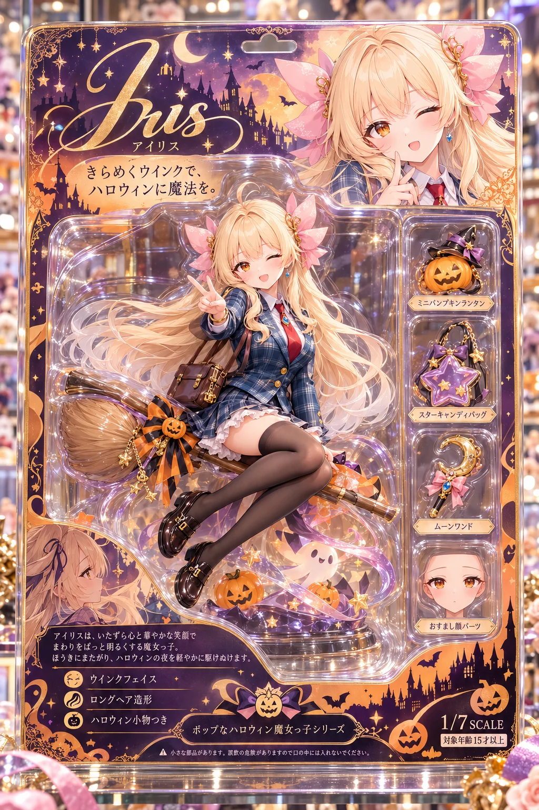
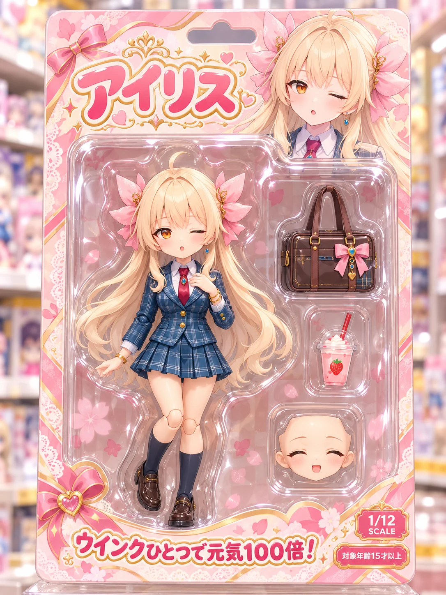
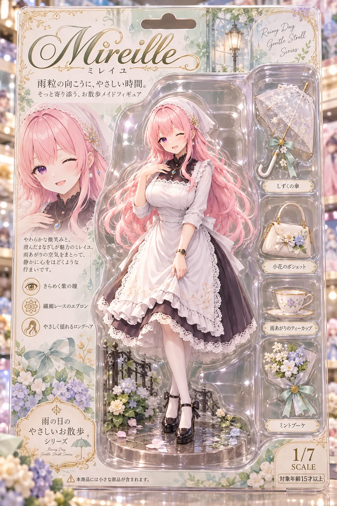

GPT-image-2 用2026-10-01
ChatGPT（GPT-image-2）に自分のキャラの画像を1枚渡して、この文を貼るだけ。おもちゃ屋さんに並んでいそうなフィギュアのパッケージになって、キャラの名前とキャッチコピーも台紙にちゃんと入ります。
作例




※作例の画像の転載・保存しての再配布はご遠慮ください。
使い方（3ステップ）
- ChatGPT を開いて、画像を作れるモード（GPT-image-2）にする
- 自分のキャラの画像を1枚だけ添付する（自分の絵・使ってよい画像だけ）
- 下のプロンプトをコピーして【】のうしろを書き換え、そのまま送信する
プロンプト
【色の付いたところ】を自分の内容に書き換えて使ってください。
プロンプト
添付した画像のキャラクターを、おもちゃ屋さんに並ぶ「ブリスターパック入りのアクションフィギュア」にしてください。 【キャラ名】（キャラの名前） 【キャッチコピー】「（好きなひとこと）」 【付属品】（小物を3つ） 【テーマカラー】（好きな色） ・キャラの顔立ち、髪型、髪色、目の色、服装は添付画像のまま変えない ・フィギュアは約1/12スケールの可愛いデフォルメ寄りの造形で、台紙の中央の透明なくぼみに立っている ・付属品はフィギュアの横の小さなくぼみに1つずつ並べる ・台紙は【テーマカラー】を基調にしたパステルのデザインで、上部に【キャラ名】を大きな丸いロゴ文字、下部に【キャッチコピー】を丸ゴシック体で入れる ・台紙の右下に小さく「1/12 SCALE」「対象年齢15才以上」 ・文字は【キャラ名】【キャッチコピー】と右下の表記だけ。ローマ字の名前や説明文など、ほかの文字は入れない ・上部に吊り下げ用の穴、プラスチックのツヤと映り込みをリアルに ・背景は明るいおもちゃ売り場の棚をやわらかくぼかす。商品写真のような照明 ・縦長 3:4、高精細
変えるところ
| ところ | 説明 | 例 |
|---|---|---|
| 【キャラ名】 | 台紙の上に大きく入る名前（カタカナ・ひらがなが崩れにくい） | ルピナス／アイリス／フィオナ |
| 【キャッチコピー】 | 台紙の下に入るひとこと。「」の中を書き換える | 「今日もいちばん可愛い、わたし。」／「ウインクひとつで元気100倍！」 |
| 【付属品】 | フィギュアの横に並ぶ小物を3つ（／で区切る） | 紅茶のカップ／金木犀の小枝／予備の表情パーツ（ウインク） |
| 【テーマカラー】 | 台紙の色。2色にするとパッケージらしくなる | ラベンダーとミルクホワイト／ピーチピンクとゴールド |
メモ
- 台紙に知らない英字や説明文が入るときは、「ほかの文字は入れない」の行が消えていないか確かめてください（この行が無いと、ローマ字の名前などを勝手に足します）。
- 顔が添付と変わるときは、同じチャットで「顔と髪型は添付画像のままにして、作り直して」と送ると戻りやすいです。
- 縦長 3:4 のまま X に貼ると、パッケージ全体が見えてきれいです。
配布ルール
- ⭕ プロンプトの改変は自由です。
- ⭕ 生成した画像は SNS に投稿して大丈夫です。
- ❌ プロンプト文そのものの転載・再配布・販売はしないでください。
- ❌ 自作のプロンプトだと名乗ることはやめてください。
- ❌ このページの作例画像の無断転載はしないでください。
- ❌ 実在の人物の写真や、他の人のキャラクターの画像を無断で添付しないでください。
- 💌 使ったら #ルピナスプロンプト を付けて見せてくれたら、とても嬉しいです（任意です）。
バックナンバー
バックナンバー（過去の配布）はここからは辿れません。欲しい方は X（@irisfionaAIBS）／Bluesky の DM で気軽に声をかけてください、URL をお送りします。